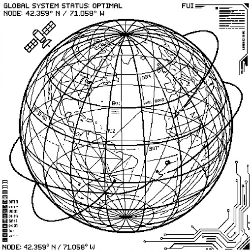

GLOBAL SENSOR NETWORK
LIVE
SYSTEM STATUS: NOMINAL
SYS_LOG :: TRACE
> INIT CORE_SIM... OK
> SYNC NODE [45.9N]... OK
> FETCH TELEMETRY...
> FLUX: NOMINAL
> TEMP: 22.4C STABLE
> AUTH: GUEST_ACCESS
> PING: 12ms
> SYS_LOAD: 14%
> NET_UPLINK: ACTIVE
> INIT CORE_SIM... OK
> SYNC NODE [45.9N]... OK
> FETCH TELEMETRY...
> FLUX: NOMINAL
> TEMP: 22.4C STABLE
> AUTH: GUEST_ACCESS
> PING: 12ms
> SYS_LOAD: 14%
> NET_UPLINK: ACTIVE
DATA_FLUX
79%